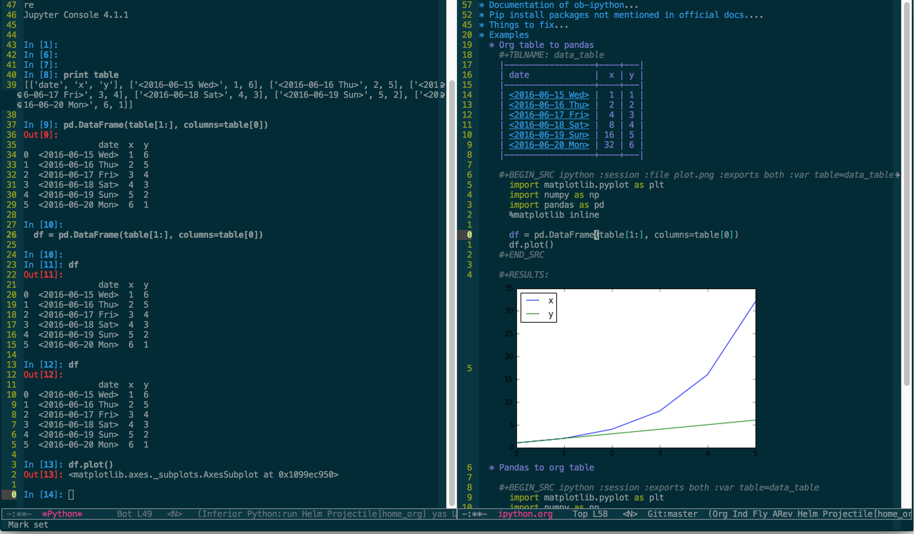
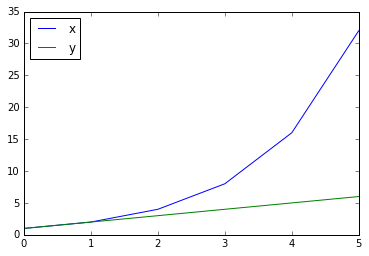

Very powerful data analysis environment - org mode with ob-ipython
Table of Contents
- 1. Introduction
- 2. Features (aka "What's that powerful about it")
- 2.1. Embed code blocks in any language
- 2.2. Results can be exported to many formats, like latex (demo), html (this post)
- 2.3. Programmable documents (aka "Literate programming")
- 2.4. Built in excel alternative
- 2.5. Pass data between languages
- 2.6. Outline view is powerful for organizing your work
- 2.7. Navigate to code and between org files with ctags.
- 2.8. Many more
- 2.8.1. Embed latex formulas
- 2.8.2. Fast integration with source control
- 2.8.3. Mobile client
- 2.8.4. Spaced repetition framework (remember all those pesky maths formulas)
- 2.8.5. Calendar
- 2.8.6. Managing papers citations
- 2.8.7. Tagging
- 2.8.8. Links
- 2.8.9. Agenda views
- 2.8.10. Quickly add something to current org, without interruption to flow
- 2.8.11. Do lectures
- 2.8.12. Go on a diet
- 2.8.13. Even more
- 3. Installation
- 4. Troubleshooting if something doesn't work
- 5. My workflow
- 6. Examples
- 7. Unresolved problems
- 8. Further reading
- 8.1. Official org mode documentation
- 8.2. Official documentation of ob-ipython
- 8.3. Research paper: An Effective Git And Org-Mode Based Workflow For Reproducible Research
- 8.4. Run a whole research department on CMU using org mode
- 8.5. Org mode for managing your server configuration
- 8.6. Manage your emacs configuration using org mode
1 Introduction
Emacs org-mode with ob-ipython is the most powerful data analysis environment I ever used.
I find it much more powerful than other tools I used, including jupyter and beaker web notebooks or just writing python in PyCharm.
Emacs org mode with ob-ipython is like jupyter or beaker notebook, but in Emacs instead of browser and with many more features.
Word "Emacs" may be scary. There are pre-packaged and pre-configured emacs distribution that have much smaller learning curve, my favorite being Spacemacs (I am in progress of rebasing my config with it). You can just use 1% of capabilities of Emacs (probably majority of Emacs users do not approach 10% of Emacs capabilities) and still benefit from it.
If you are going to bring up the common quote of "emacs is fine operating system, but it lacks decent text editor" -
Emacs now have decent text editor by using the vim emulation evil-mode. It's the best vim emulation in existence
and even many packages from vim are ported. Spacemacs is a nice emacs distribution that bundles evil mode.
I will try to introduce and describe org mode with ob-ipython it for users who never used Emacs before.
Since this blog post have been written in org mode, linear reading experience in exported format is less optimal experience than reading the org mode file directly in org mode.
2 Features (aka "What's that powerful about it")
2.1 Embed code blocks in any language
You can embed embeded source code long text and evaluate it with C-c C-c.
It supports textual results or results as charts.
What's more You can have separate org file and ipython console open side by side. With ipython, reading python docstrings and code completion works well. See my screenshot.
Since ob-ipython uses jupyter, you can get the same environment for anything that have jupyter kernel, including matlab, Scala, Spark or R and many more.
2.2 Results can be exported to many formats, like latex (demo), html (this post)
This blog post is just an export of org mode file. All code examples have been written in org mode.
Exporting works to formats like latex (native and beamer), markdown, jira, odt (than can be imported to google docs), wiki formats and many more.
Syntax highlighting can be preserved for some exports, like html or latex.
You can just learn one way to edit documents and presentations than can be exported to majority of formats on earth.
2.3 Programmable documents (aka "Literate programming")
Emacs org mode with org babel is a full fledged literate programming environment. Some people have published whole books or research papers as a large executable document in org. There is an even Research paper about it.
Python computations in science and engineering book supports org mode and it's far better book reading experience than anything I ever experienced before. I can tweak and re-run code examples, link from my other notes, tag or bookmark interesting sections, jump between sections and many more.
When writing some latex in college, I recall situations when I am half way through writing latex document. I would came up with the idea of some parameter tweak, and suddenly I have to re-generate all charts.
With org mode, the document is generated pragmatically. Not only you can easily re-generate it, but readers of your paper can tweak parameters or supply their own data set and re-generate the whole document.
Another example is training machine model. You can define your model parameters as org constants. You can tweak some model parameter and have separate org mode headings for "performance statistics", "top miss-classified cross validation samples", etc. Added benefit is that you can commit all this to git.
As soon as you learn org mode all of it is easy and seamless.
2.4 Built in excel alternative
Sometimes just "manually" editing the data is the most productive thing to do. You can do it with org mode spreadsheet capabilities on org tables.
The added benefit is that formulas are written in lisp, that is cooler and more powerful language than Visual basic. http://orgmode.org/manual/Translator-functions.html
2.4.1 Export to pandas
My current Table->Pandas->Table workflow works, but is a bit clunky, but it can be improved. See examples section.
2.4.2 Other exporters
You can export org tables to many formats by exporting it to pandas and then using pandas exporter. Nevertheless, org supports sql, csv, latex, html exporters.
2.5 Pass data between languages
Similar functionality is offered by beaker notebook.
I found out that org mode as intermediate format for data sometimes works better for me.
Since intermediate format for a data frame is the org table, I can import data frame to org, edit it as spreadsheet and export it back. See Pass data directly between languages in examples section.
2.6 Outline view is powerful for organizing your work
Org mode outline view is very handy for organizing your work. When working on some larger problem, I am only focusing on small subset of it. Org mode lets me just expand sections that are currently relevant.
I also find adding embedding TODO items in the tree quite handy.
When I encounter some problem I mark a subtree as TODO, and I can
later inspect just subtree headlines with TODO items with them.
See  .
.
2.7 Navigate to code and between org files with ctags.
You can link to your existing codebase with org-ctags. It seems possible to provide ide-like navigation between code defined in org src buffers, but I didn't configure it yet.
2.8 Many more
You don't have to use all features offered by org mode.
2.8.1 Embed latex formulas
Also works in html export with mathjax.
2.8.2 Fast integration with source control
I like to keep my notes in source control.
To avoid overheard of additional committing I use magit-mode.
Out of the box you can commit directly from Emacs with 6 keyboard strokes.
With a few lines of elisp you can auto generate commit messages or automatically commit based on some condition (e.g. save or file closed or focus-out-hook).
Everything in org is plain text, including results of eval of code blocks, so it will be treated well by the source control.
2.8.3 Mobile client
2.8.4 Spaced repetition framework (remember all those pesky maths formulas)
If you are like me, you forgot majority of maths formulas since college. Very good post about spaced repetition in general from gwern.
There are tools like anki or super memo, but as soon as you want advanced features like latex support they either not support them, or do it in a very bad way.
org-drill is a spaced repetition framework in drill, that allows you to use all of the org features for creating flash cards. Also take a look at this interesting blog post.
2.8.5 Calendar
2.8.6 Managing papers citations
2.8.7 Tagging
2.8.8 Links
2.8.9 Agenda views
2.8.11 Do lectures
2.8.12 Go on a diet
2.8.13 Even more
I only mentioned some of the features. More urls that you can take a look at:
(browse-url-emacs "http://kitchingroup.cheme.cmu.edu/org/2014/08/08/What-we-are-using-org-mode-for.org")
3 Installation
3.1 Install Emacs
Although I don't use it, I recommend Spacemacs, pre-configured emacs distribution, like "Ubuntu" of Emacs.
3.2 Install python packages
If you don't run those, you may run into troubles.
pip install --upgrade pip pip install --upgrade ipython pip install --upgrade pyzmq pip install --upgrade jupyter
3.3 Install org mode and ob-ipython
3.4 Elisp configuration
Add to your Emacs config:
(require 'org) (require 'ob-ipython) ;; don't prompt me to confirm everytime I want to evaluate a block (setq org-confirm-babel-evaluate nil) ;;; display/update images in the buffer after I evaluate (add-hook 'org-babel-after-execute-hook 'org-display-inline-images 'append)
4 Troubleshooting if something doesn't work
4.1 Verify that restarting ipython doesn't help.
(ob-ipython-kill-kernel)
4.2 Open "Python" buffer to see python errors
4.3 Toggle elisp debug on error
(toggle-debug-on-error)
5 My workflow
I settled on workflow of having two buffers opened side by side. On one side I would have opened org file, on the other side I would the have ipython console.
I am experimenting with commands in the ipython console, and I copy back the permanent results I want to remember or share with people into the org src block.
Both windows re-use the same ipython kernel (So they share variables). You may have multiple kernels running. I have code completion and python docstrings in the ipython buffer.
5.1 Screenshot

5.2 Default ipython configuration
If you want to run some code in each ipython block you can add it to ~/.ipython/profile_default/startup.
Foe example, to avoid adding %matplotlib inline to each source code block:
echo "%matplotlib inline" >> ~/.ipython/profile_default/startup/66-matplot.py
5.3 TODO Configure yasnippet
ob-ipython docs suggest yasnippet for editing code. So far I have been using custom elisp code, but a few things can be nicer about yasnippet.
# -*- mode: snippet -*- # name: ipython block # key: py # -- #+BEGIN_SRC ipython :session ${1::file ${2:$$(let ((temporary-file-directory "./")) (make-temp-file "py" nil ".png"))} }:exports ${3:both} $0 #+END_SRC
6 Examples
6.1 Org table to pandas and plotting
| date | x | y |
|---|---|---|
| 1 | 1 | |
| 2 | 2 | |
| 4 | 3 | |
| 8 | 4 | |
| 16 | 5 | |
| 32 | 6 |
import matplotlib.pyplot as plt import numpy as np import pandas as pd %matplotlib inline df = pd.DataFrame(table[1:], columns=table[0]) df.plot()

6.2 Org table -> Pandas -> Org table
You have to write small reusable snippet to print pandas to org format.
You can add it to your builtin ipython code snippets.
You also need to tell src block to interpret results directly with :results output raw drawer :noweb yes.
def arr_to_org(arr): line = "|".join(str(item) for item in arr) return "|{}|".format(line) def df_to_org(df): return "\n".join([arr_to_org(df.columns)] + [arr_to_org(row) for row in df.values]) import matplotlib.pyplot as plt import numpy as np import pandas as pd %matplotlib inline df = pd.DataFrame(table[1:], columns=table[0]) df.y = df.y.apply(lambda y: y*2) print df_to_org(df)
| date | x | y |
| 1 | 2 | |
| 2 | 4 | |
| 4 | 6 | |
| 8 | 8 | |
| 16 | 10 | |
| 32 | 12 |
Afterwards, you may assign result table to variable, edit it with org spreadsheet capabilities and use in other python script.
6.3 TODO Shared code
6.4 TODO Use global constant
6.5 TODO Data frame sharing with org tables
6.6 TODO Pass data directly between languages
Create my example based on http://minimallysufficient.github.io/2015/10/24/org-mode-as-an-alternative-to-knitr.html
6.7 TODO Different language kernels
This should work:
#+BEGIN_SRC ipython :session :kernel clojure (+ 1 2) #+END_SRC #+RESULTS: : 3
6.8 Examples from other blog posts
C-c C-c block to open org file directly in Emacs:
(browse-url-emacs "https://raw.githubusercontent.com/dfeich/org-babel-examples/master/python/pythonbabel.org")
(browse-url-emacs "https://raw.githubusercontent.com/dfeich/org-babel-examples/master/python/ipython-babel.org")
7 Unresolved problems
Problems I did not resolve yet:
7.1 TODO ob-ipython-inspect in popup
Currently it opens a separate buffer. I would prefer a popup.
7.2 TODO Configure the org-edit-src-code to use ipython completion.
Currently, I have code completion only working in ipython buffer. It seems doable to configure it in the edit source block as well.
7.3 TODO Capture results from ipython to src block.
To avoid manual copying between ipython buffer and source code block, I could implement an ob-ipython-capture function, that would add last executed
command in the ipython console to the src block.
Keyboard macros can work cross-buffer, so this could be simple keyboard macro, but I didn't try it out yet.
7.4 TODO Figure out why SVG doesn't work
In order to make a svg graphic rather than png, you may specify the output format globally to IPython.
%config InlineBackend.figure_format = 'svg'
8 Further reading
8.2 Official documentation of ob-ipython
Open org directly in Emacs:
(browse-url-emacs "https://raw.githubusercontent.com/gregsexton/ob-ipython/master/README.org")
8.3 Research paper: An Effective Git And Org-Mode Based Workflow For Reproducible Research
Search by DOI 10.1145/2723872.2723881 on sci hub.